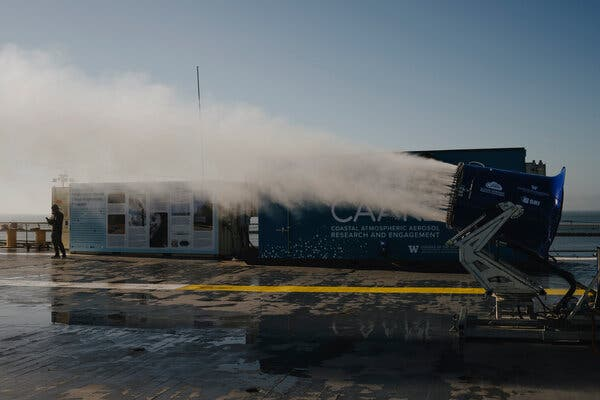

In light of the week’s news, let me highlight that the word “verdict” comes from the Latin “verus dictum,” which translates to “saying the truth.” A trial that reaches a verdict thus produces a statement of truth, as determined from curated evidence presented to an audience without prejudice. In that way, the justice system in our country is very much a scientific process carried out (in the case of a jury trial) by ordinary citizens. They’ve arrived at a truth—Donald Trump is now a convicted felon, and nothing will change that, at least not in the short run. There may be wrinkles over the next few months, but we may now face a presidential election where one of the candidates cannot, by force of law, vote for himself. Interesting times.
In the first part of this series, I noted that engineering solutions like direct air capture need a “both-and” strategy that combines emissions reductions with technological solutions that address climate change. In the second part of the series, following the next New York Times article in a series titled “Buying Time,” I examine the real-world consequences of hack reporting on a recent climate field test. The big idea of the test is to see if Earth’s temperature can be adjusted by reflecting sunlight into space and creating more (and more reflective) clouds.
As with the previous installment in this series, the scientists conducting the study act as protagonists, and arrogant donation whores like Greenpeace and Friends of the Earth act as antagonists. I denigrate these organizations because they continue to assert that trying anything other than going hell-bent on reducing emissions is “distracting”. This argument is self-serving since such organizations raise money by vilifying the energy industry and making the rest of us feel guilty about our “carbon footprint,” with the only call to action being “Donate.” Plus, there’s zero evidence that they have been effective in moving the needle. [I’d argue that their brand of activism has been counterproductive. But I digress.]
The author, Christopher Flavelle, is a long-time “climate reporter” whose work “focuses on the potential, but also the trade-offs and limitations, of adapting to climate change and where those efforts go wrong.” From this description in his bio, I conclude that he’s a storyteller, not a scientist, plus he’s looking to bothsides the climate situation to establish plot tension. Wrong move, Mr. Flavelle. There’s only one “side” for humans to be on: the one dedicated to maintaining the climate we’ve adapted to.
Let’s turn to science: As I’ve covered before, increasing carbon dioxide is the principal cause of planetary warming. But water vapor is the “greenhouse” gas that absorbs the most heat. Water doesn’t directly contribute to global warming because not much of it leaves the troposphere (the layer closest to the ground), condensing instead into clouds. During the day, clouds reflect sunlight, leading to less absorption, while at the same time, clouds act as a blanket that holds heat in, leading to slower cooling, so modeling them is complex.
More than twenty years ago, based on then-current cloud models, John Latham, a physicist in England, suggested that purposefully engineering clouds might be a productive way to control the planet’s temperature . The cooling potential of clouds depends on their reflectivity, which depends on droplet size and composition, and that, in turn, depends on the nature of particles that nucleate the droplets, typically dust and sea salt, over the oceans. [Ironically, physicists have calculated that particulates emitted from dirty fuels previously used in shipping contributed significantly to cloud formation over the oceans. Now that shipping has switched to cleaner fuels, there’s less soot over the ocean, so there’s less reflectivity (and more warming)! ]
This line of thought has been pursued since Prof. Latham’s suggestion, most recently, by the privately-funded University of Washington Marine Cloud Brightening Experiment. To engineer the right kind of spray, engineers developed a high-tech atomizer. It reminds me of snowmaking equipment used at ski resorts, but cloudmaking is apparently harder. [This atomizer took a decade to develop and test outdoors, while the first snowmaking equipment was devised in 1950, with the first commercial sale (to a ski resort outside New York City) happening just two years later 1 .]
Testing the atomizer outside is just the next logical step in the experiment since laboratory conditions are exceedingly well controlled. This outdoor test is what Mr. Flavell reported on. Many quantitative claims in the article should be examined critically; most are expressed as “percent,” which is an accessible but easily manipulated quantity (i.e., “Percent of what, exactly?”). But I’m not covering the technology here, so let’s assume that the engineers are realistic and that a small number of these devices could, if perfected, help shade the planet.
So, what happened?
Before the article’s publication, the Times contacted the White House to comment. They stated, “ The U.S. government is not involved in the Solar Radiation Modification (SRM) experiment taking place in Alameda, CA, or anywhere else. ” Imagine that! Politicians who’ve publicly pledged to address climate change are actively disclaiming any responsibility for a test that could make a difference! Plus, the statement is disingenuous because the test was of the atomizer, not to actually form enough clouds to shade the planet. Specifically, the engineers were testing this device:

The device sprays a mist of salt water into the air on the deck of an aircraft carrier floating on San Francisco Bay, which is a body of salt water. How bad could that be? However, once the Times publicized the test, local officials shut it down despite already approving the project. Why?
“Fear” is the most straightforward answer. According to the next Times article , local officials said they needed to evaluate “the chemical compounds in the spray to determine if they are a hazard either inhaled in aerosol form by humans and animals, or landing on the ground or in the Bay.” Seriously? Do you want your citizens to be afraid of salt water spray? Once officials pose the question, the public begins to doubt earnest scientists and engineers. It’s how crazy conspiracy theories get started.
Here’s where we find ourselves today: Seventy-five years ago, Americans returning from World War II created a commercial snowmaker that was adopted in under two years. Sixty-five years ago, the Seattle Space Needle went from a sketch on a napkin to a local icon in 14 months. In 1962, President Kennedy, also a war veteran, pledged to put a man on the moon, and eight years later, NASA landed Apollo 11, making heroes of the astronauts; all of them had backgrounds in science or engineering. I was a space nerd and became a scientist due in no small part to these heroes and the news coverage.
These accomplishments were celebrated in newspapers and on television—the stories were narratives of extraordinary achievements and heroic figures overcoming incalculable risks to achieve great things. Bothsidesism (if that’s a word) in journalism was a rarity—the Times put patriotism as a public good ahead of “investigative reporting,” which turns the reporter into the heroic figure of their own story but requires readers who can think for themselves.
This is how the circular firing squad is perpetuated—If successful, every technology related to energy or climate will affect nearly every aspect of human life. When journalists focus on presenting two sides, one for and one against, the risks and rewards of a given innovation are given equal weight. But, in human psychology, risks outweigh rewards two-to-one 2 . Further, the risk of developing an innovation haphazardly or too slowly aren’t considered. So, everything seems too risky, except the status quo.
We can’t afford this kind of fear-induced paralysis any longer. We need journalists, in particular, to take sides, namely the side of actions that could benefit humanity. If you’re part of the circular firing squad, stand down. We need to try everything that could work at a scale that could make a difference. It’s time to return to boldness.
See en.wikipedia.org